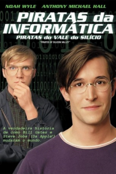

Piratas da Informática (1999)


The true story of how Bill Gates and Steve Jobs changed the world.

Avaliação (TMDb):


7.0/10 (376 votos)
Avaliação (Usuário):
Outro Título:Pirates of Silicon Valley
País:United States, 97 minutos
Idiomas falados:Inglês, Português
Gênero(s):Drama
Diretor(s):Martyn Burke
Codec:MPEG-2 (DVD)
Número: 4564
Sinopse:
Mostra como Bill Gates e Steve Jobs fundaram as respectivas Microsoft e Apple e a concorrência entre os dois para ver quem chegava primeiro e as estratégias que utilizaram para criarem suas empresas.
Elenco:
Noah Wyle, Anthony Michael Hall, Joey Slotnick, J.G. Hertzler, Wayne Pére, Sheila Shaw, Gema Zamprogna, John DiMaggio, Josh Hopkins, Gailard Sartain
Tipo de mídia: DVD5,
Legendas: Inglês, Espanhol, Português,
Alugado: Não
Tela: 4:3